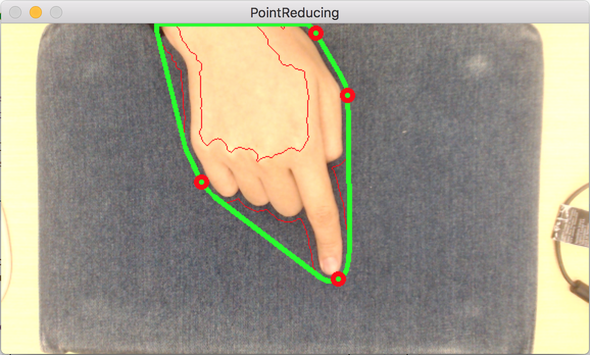

Problem Definition
For recent days it is not hard for us to reach an input system which takes finger motion as media. These systems, however, is usually costly (e.g. a capacitive touch panel) and leave users a horrible experience due to its "smooth" surface, which is not friendly to handwritting at all. In our system, we look forward to figure out a camera-based input system that recognizes the motion path of hand (or finger). This system can be applied to any flat plane regardless of the surface meterials that plain is made of. Our system also reduces the high cost of traditional motion tracking system to the cost of two primitive cameras!
Program Structure
The overall design of our program is illustrated in figure1 below:
Figure 1: Program structure
Initiative and Design
The design idea of this system can be generally divided into two parts. In the first part we mainly consider those methods that can be used to trace the fingertip of a hand for the top camera. The second part focuses on figuring out a set of algorithms that serve to detect the finger touching result for the side camera. The functions to be implementing for these two parts are illustrated in details below:
The first part
- Detect and trace the position of fingertip of the “longest” finger, that is, the fingertip with the highest position along y axis.
- Record the fingertip position for each frame and translate this set of points as drawing path.
- Be able to detect and drop “unrealistic” drawing points – the kind of points with an unrealistic position in a frame given the position of previous drawing points (usually caused by fingertip detection failure).
The second part
- Detect and trace the position of fingertip of the “lowest” finger, that is, the fingertip with the lowest position along y axis.
- Automatically detect the height of plane so as to determine the touching threshold as well as guide user to place side camera on the correct level.
- Detect the touching state of finger. If a touching event is detected, informing drawing function to draw path on the canvas. If the touching event terminates, informing drawing function to stop drawing path.
Software environment
| System | Mac OS X 10.13.1 |
|---|---|
| OpenCV | v3.1.0 |
| IDE | Xcode v9.0 |
Hardware Requirement
| Peripherals | Logitech high resolution camera 1080P * 2 |
|---|
Method and Implementation
In our project, we need to implement (or call from OpenCV library) a series of image processing method so as to extract useful and meaning information from the original scene images captured by the camera system. In order to segment the target object (In our case, hand and fingertip) from the background, We made reference to some relevant papers and finally came up with a set of methods that, when combined into a specific order, can yield acceptable results.
For a quick look at the methods we adopted, we list them below (sorted by their actual order of applications):
Methods applying to fingertip detection:
- Skin color detection
- Median blur (Median filter)
- Dilation
- Contour finding
- Convex hull
- Target point reducing
- Target point filtering
Methods applying to plane height detection:
- Detect Region of Interest
- HSV Color Conversion
- Histogram Calculation
- Back projection
- Filter2D
- Contours Finding
- Extract the Largest Contour
- Draw contour and bounding box
For each aforementioned method, we will elaborate in the following part the function it serves and the purpose we introduce it into our program.
Skin color detection
The general purpose this method is serving as is to identify objects in the scene image with skin color and extract them into a processed image. This is no doubt one of the most widely used methods (before the pervasion of CNN) when the target object is the part of human body.
There already existed a bulk of research conducted by scientists from various field with regards to figuring out a most accurate way to identify skin color from background and reduce the rate of misclassification. Based on our own experiment, the skin color can by more accurately extracted if we can take advantage of the color information captured by our camera system to a larger extent. After repetitive experiments, we finally decided to adopt the algorithm proposed by Nusirwan Anwar[1] which takes RGB, HCbCr and HSV into consideration.
In addition to the most popular mentioned RGB color model, some color spaces have their luminance component separated from the chromatic component, and they are known to possess higher discriminability between skin pixels and non-skin pixels over various illumination conditions. HCbCr and HSV are models of such kind. Figure2 and Figure3 shown below are images in HSV and HCbCr color mode converting from the primitive RGB image Figure1.
 Figure 1: RGB color space |
Figure 2: HSV color space |
Figure 3: HCbCr color space |
To make a long story short, we exerted the following contraints (color filters) to identify skin color pixels from the original RGB image by converting, if necessary, the primitive input into HCbCr and HSV color model separately.
Constraints for RGB:
Cond1: R > 95 && > 40 && B > 20 && max(R, G, B) - min(R, G, B) > 15 && abs(R-G)>15 && R > G && R > B
Cond2: R > 220 && G > 210 && B > 170 && abs(R-G) <= 15 && R>B && G>B
Result = Cond1 || Cond2
Constraints for HSV:
Cond: H < 25 || H > 230
Result = Cond
Constraints for HCbCr:
Cond1: Cr <= 1.5862*Cb+20;
Cond2: Cr >= 0.3448*Cb+76.2069;
Cond3: Cr >= -4.5652*Cb+234.5652;
Cond4: Cr <= -1.15*Cb+301.75;
Cond5: Cr <= -2.2857*Cb+432.85;
Result = Cond1 && Cond2 && Cond3 && Cond4 &&Cond5
Figure4 gives a sample output of this step.

Figure 4: Processed result after this step
Median blur (Median filter)
Median blur is a famous algorithm that works well in eliminating white noise (such as salt and pepper noise) from the original image. The main idea of the algorithm is to move a kernel on the image pixel by pixel and replace the central element (pixel) of the overlapped kernel with the median of all the pixels within the kernel.
Since the results output by previous step are prone to carry with some disordered noise, we can effectively kill these stuffs by introducing this algorithm.
Figure5 gives a sample output of this step.

Figure 5: Processed result after this step
Dilation
Dilation is a common method to apply when we are willing to “dilate” the white region in an image. This method operates by convoluting an image with a special kernel. When this kernel is scanned over an image, the central pixel of the overlapping region on the image is replaced with the maximal value of pixels within the overlapping region.
We are now able conclude that this operation can cause the bright region within an image to “grow”, which is exactly the feature we are looking for, since there still exists many inconsecutive set of points in Figures. Our desirable result is an image with hand region labelled continuously and smoothly.
Figure6 gives a sample output of this step.
Figure 6: Processed result after this step
Contour finding
The next step is to find the contour of each white region in Figure6 separately. Although we have implemented our own contour finding method based on the boundary following algorithm, we finally resort to OpenCV library due to the inferior performance our algorithm.
Note here that we may possibly find out many contours from Figure6 since the misclassified regions generated by skin detection algorithm still exist. Hence, we need to filter these regions out by only processing the region with the largest area in the subsequent step and simply ignore those smaller regions.
Figure7 gives a sample output of this step.

Figure 7: Processed result after this step
Convex hall
In mathematics, Convex Hull is the smallest convex set that contains a set of points. And a convex set is a set of points such that, if we trace a straight line from any pair of points in the set, that line must be also be inside the region.
In computer vision field, we usually draw a convex hall of a complicated shape so that we can process and analyze this object in a much more convenient way. In our own case, introducing this method can help us simplify the extraction of the fingertips from a hand shape.
Again we invoke OpenCV “convexHall” function to help us achieve this goal. The result of this method is an array (vector) of points that denote the “corners” of the convex hall polygon. These “corner” positions are super useful in determining the fingertip position according to their distribution along the boundary of the polygon.
Figure8 gives a sample output of this step.
Figure 8: Processed result after this step
Target point reducing
The reason why we deem the “corner” points of convex hall as “super meaningful” is that these points most possibly occur in the fingertip region of our hands since our fingertips always possess a certain curvature [2]. Besides, this curvature is usually biggest in comparison with other parts of our hand.
Since openCV does not actually save the position of a convex hall but save instead the “corner” points of this polygon. It is easy for us to deduce that a boundary with higher curvature should be described by more “corner” points. This feature carves out a way for us to figure out the position of fingertip without much effort. Thus, we need to apply certain methods to this set of points to extract our desired point properly.
The first thing we should do is to reduce the number of points in figure8. It is not hard for us to conclude from figure8 that points are likely to congregate in the part of convex hall with curvature information. Therefore, we should reduce those points in a swarm to a single point, representing a small targeting region of the whole image.
The specific implementation of this method is to classify points on the convex hall based on their relative distance. Then we pick only one point from each class to form a set of points with much less size.
Figure9 gives a sample output of this step.

Figure 9: Processed result after this step
Target point filtering
In this part we are still seeking for the target point that could most possibly indicate the position of our fingertip. Hence, we proceed our filtering step by exerting more constraints on it. These extra constrains are listed below:
- Only consider the point of which the angle between itself and the center of contour region to be between a certain interval (50-130).
- Only consider the point of which the height from the center of contour region to be between a certain interval (around half of the height of the contour bounding box).
By exerting these two extra constraints on the set of points. We can finally obtain a single point which represents the position of fingertip with theoretically highest possibility.
The figure10 and figure11 below illustrate these two constraints better:

Figure 10: Constraints on the angle of points

Figure 11: Constraints on the height of points
Figure12 gives a sample output of this step.
Figure 12: Processed result after this step
Detect Region of Interest
In the first step of automatically detecting desktop height, we start to find a small portion of similar color of the real objects. We specify a region of interest in the central lower part of image. Note that we are assuming every time this camera system is fixed at a given position that basically the region of lower part of the image is the desktop. So the region of interest will correctly detect a small portion of the desktop. Then we extracting this information to use as a mask to detect the whole desk.
Figure 13: Detect Region of Interest
HSV Color Conversion
After specifying the ROI, we need to transform both source image and ROI to HSV format. The range is given below.
H: [0, 180]
S: [0, 256]
V: [0, 256]
Histogram Calculation
Histograms are collected counts of data organized into a set of predefined bins. When we say data we are not restricting it to be intensity values. The data collected can be whatever feature you find useful to describe your image. So we calculate the histogram of ROI as a parameter to find the all possible similar pixel in the image.
Figure 14: Histogram Calculation
Back Projection
Back Projection is a way of recording how well the pixels of a given image fit the distribution of pixels in a histogram model. To make it simpler: For Back Projection, you calculate the histogram model of a feature and then use it to find this feature in an image.
This method is given by openCV library, it is very handy to use the ROI histogram information to project back the region relating to the ROI.

Figure 15: Back Projection
Filter2D
The next step is to reduce the noise when applying back projection method. There are many noise on the edge of our object and also outside of desired region. So we apply filter2D method to convolve the image with a disc kernel and apply threshold.
Contours Finding
We use the openCV inbuilt function to find contours of the image.
Extract the Largest Contour
To find the largest contour, we iterate through contours vector and apply contourArea method which is also inbuilt function to calculate each area of all contours. Then we assign the largest contour to the bounding rectangle, an opencv inbuilt method called boudingRect will take the input array to form the rectangle.
Draw Contour and Bounding Box
This is the final step to get the desktop height, which we use results calculating before to draw the contour and the bounding box of the source image. Functions used here are drawContours and rectangle from openCV library.
Figure 16: Draw Contour and Bounding Box
Experiments and Results
Since the writing pad system we designed is still a color-detection-based system, inappropriate light condition can still be detrimental to the recognition accuracy of our system. Hence, we elaborately adjust the light condition of environment around to meet the needs of our system before conducting the following experiments.
Plane height detection from side camera view
Accuracy of recognition from top camera view
Accuracy of recognition from side camera view
Combined results and drawing effect
Conclusions and Discussions
We can conclude from the video results showing above that, despite the inaccurate and unstable tracing points that may occur within a short period of time during the whole process, the overall tracing result and accuracy of recognition is acceptable.
In addition to the fingertip tracing performance of the system, the drawing function works well in translating the position information of the fingertip from two cameras into drawing path. Besides, the drawing parameters (stroke for instance) can be properly adjusted by sliding the track bar and the canvas can be refreshed simply by single clicked the right button of your mouse on the canvas.
Shortcomings and Prospects
Shortcomings
As is noticeable from the video of experiment results showing above, the frame rate of processed image stream displaying in the window is not ideal even though we have resized the original input, which is captured with resolution 1920*1080, into video stream with 70% less pixels than the original video along each axis. This shortcoming can only be overcome by further optimized algorithms in each step and improve the overall computation efficiency. What’s more, acceleration technology such as multi-thread programming or GPU based programming can also be introduced to deal with this problem.
Besides performance issues, a more fundamental topic regarding hand detection also deserves much attention. In our program we have no choice but to apply the traditional method – skin color detection to our program as the only way to detect hand position. This is an inevitable route to success since the image capturing devices we possessed are only two simple RGB cameras. If more advanced devices such as depth camera or infrared camera are available to us, we can further horn the accuracy of tracing results and program a more satisfactory system.
As for the plane height detection method, the first drawback is that it is also a color based detection. The detection results won’t be as much precise when the background has many similar color objects. The brightness of the color is also a main factor to correctly detect the region. The second is that it chooses a specific position in the image to extract possible related region histogram. Hence, the system only assumes the desk is positioned in the region of interest, otherwise, it won’t detect desired regions.
Prospects
Although the end result of our project is still an immature system and hence incapable to be deployed in the real scenario for any practical purpose, we have made a little step towards a brand new lifestyle where people can enjoy a revolutionary writing experience. This system explored the possibility of enabling people to write everywhere and creating an amazingly convenient interactive way between human and electronic devices.
For the plane height detection part, we may want to try other methods to automatically detect the desk region in the future. we may collect different colors of desks and train the dataset to make the system more automatic to find the region of desk.
Credits and Bibliography
[1] bin Abdul Rahman, Nusirwan Anwar, Kit Chong Wei, and John See. "Rgb-h-cbcr skin colour model for human face detection." Faculty of Information Technology, Multimedia University 4 (2007).
[2] Nan R, Yang M L. Finger Recognition and Tracking Algorithm Based on Single Optical Camera[J]. Applied Mechanics & Materials, 2014, 615(615):181-188.